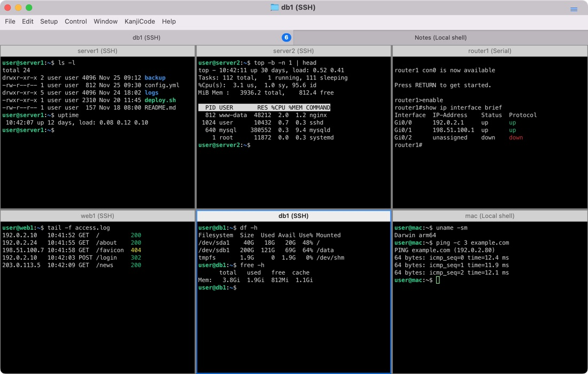

Tera Term Mac
The familiar Tera Term, now on the Mac.
SSH, Telnet, serial connections and TTL macros, just as you know them.

What it does
Rebuilt as a real Mac app, while keeping the way Tera Term for Windows works.
SSH, Telnet and serial
Servers and network devices alike. Console access over a USB serial cable, and this Mac's local shell too.
TTL macros
The Tera Term macro engine is ported, so the .ttl macros you used on Windows run as they are.
TeraTerm Menu
Save the hosts you use often and connect in one click from the menu bar or the Dock. Passwords go to the Mac keychain.
Logs and file transfer
Record and replay logs. Send and receive files with XMODEM, YMODEM, ZMODEM, Kermit, B-Plus and Quick-VAN.
Character sets and 14 languages
UTF-8, Shift_JIS, EUC-JP, JIS and more. The interface comes in 14 languages and follows your macOS language.
Automatic updates
Get notified of new versions, see what changed, and update in place.
Install
Copy the app from the DMG to your Applications folder.
- Click "Download" above and save
TeraTermMac.dmg. - Open the DMG and drag Tera Term Mac to the Applications folder.
- Open Tera Term Mac from Applications. The app tells you about future updates.
Support
The app's Help ([Help] > [Contents]) includes a quick guide with screenshots.